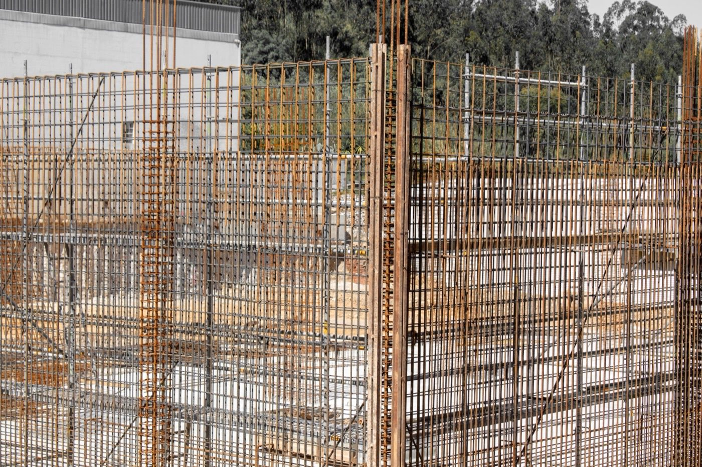

ICF vs SIP
Two high-performance wall systems: insulated concrete against insulated wood panels. Both are fast and efficient. In a humid, termite-heavy tropics, one is far safer than the other.

ICF, insulated concrete forms, and SIPs, structural insulated panels, are the two darlings of high-performance building. Both give you a fast, airtight, super-insulated shell. The difference is what's inside the wall. ICF is reinforced concrete wrapped in foam. A SIP is a foam core between two wood (OSB) skins. In a hot, humid, termite-rich climate, that difference decides everything.
Key takeaways
- On a normal wall they insulate about the same. ICF lands around R-23, a standard 6.5-inch SIP wall around R-25. Anyone selling you one over the other on R-value alone is selling.
- The difference is what happens when water gets in. ICF's core is concrete and does not care. A SIP's strength lives in two sheets of wood.
- The famous SIP failures were workmanship, not the material. Juneau's rotted roofs came down to unsealed panel joints. Properly sealed panels next door were fine.
- ICF has passed the storm-shelter impact standard. That is a life-safety threshold, not a promise of a damage-free house.
- Expect to pay a premium over wood frame, somewhere between a few percent and a lot, depending who you ask. Get local bids, not internet averages.
How they stack up
| Factor | ICF (concrete) | SIP (wood panels) |
|---|---|---|
| Core material | Reinforced concrete | Foam between OSB (wood) |
| Cost | 🟡 ~$120–190/sq ft | 🟡 ~$120–200/sq ft |
| Insulation | 🟢 Continuous foam + mass | 🟢 Continuous foam core |
| Build speed | 🟢 Forms stack fast | 🟢 Panels crane in fast |
| Moisture / humidity | 🟢 Concrete unaffected | 🔴 OSB skin vulnerable if breached |
| Termites | 🟢 Immune | 🔴 Wood skin is a target |
| Hurricane / seismic | 🟢 Monolithic concrete, excellent | 🟢 Strong panels, good connections |
| Fire | 🟢 Concrete core | 🟡 Foam + wood needs detailing |
| Tropical fit | 🟢 Excellent | 🟡 Careful; moisture and termite risk |
What's actually inside the wall
Forget the acronyms for a second and just look at a cross-section. Both systems are a sandwich. The question is what you put in the middle, and what you use for the bread.

The R-value question, honestly
This is where most comparisons go sideways, usually because someone quotes a SIP roof number against an ICF wall number.
On walls, they're close. ICF typically comes in around R-22 to R-25 effective, and the insulation, not the concrete, is doing that work. A standard 6.5-inch EPS wall SIP lands around R-25 effective. SIPs are made from 4.5 up to 12.25 inches thick, spanning roughly R-15 to R-49, so the eye-catching "up to R-50" only applies to thick polyurethane roof panels, where a fat core is practical and an ICF wall isn't even in the conversation.
Two asterisks worth knowing, and neither brochure will volunteer them:
- Blown-foam cores lose R-value as they age. Part of the headline number comes from gas trapped in the cells, and that gas slowly diffuses out. A common engineering rule of thumb is not to count on more than R-5.5 per inch over the long run.
- ICF's thermal mass is less useful than it sounds. The concrete is insulated from the inside of the house by the interior form face, so it can't soak up and release indoor heat the way exposed mass does. It's still a real benefit in a swingy climate. It's just not the free superpower it's often sold as.
What actually went wrong in Juneau
If you research SIPs for more than an hour, someone will bring up Alaska. It's worth understanding properly, because the real story is more useful than the scare version.
Around twenty multifamily buildings in Juneau, all built before 1996, developed moisture damage in the top OSB skin of their SIP roof panels. The damage clustered at the panel seams near the ridge, which earned it a name: ridge rot.
The mechanism wasn't vapor drifting through the panel. It was warm, humid indoor air leaking through gaps in the joints between panels, rising to the ridge, and condensing on the cold upper surfaces. Building Science Corporation's investigation put the blame on sealant: missing, discontinuous, applied on the cold side instead of the warm side, or applied correctly but failing to stick.
The part that matters
Panels whose joints were sealed properly showed no damage. Other SIP roofs in the same town were fine. The investigators concluded the failures were workmanship, not the Juneau climate and not the panel. Manufacturers responded by recommending interior seam tape on top of caulk and foam, and the failure mode largely went away.
So SIPs are not a defective product. They are a product with a narrow tolerance for sloppy installation, where the consequence of sloppiness is hidden inside a wall you can't inspect. In a place where you can supervise every joint, that's manageable. In a tropical build where humidity is relentless and skilled panel crews are scarce, it's a bet you may not want to take.
And the failure isn't a cold-climate curiosity. Portland Community College's Newberg Center needed its SIP roof replaced four years after it was built.
What the storm testing actually proves
ICF marketing leans hard on hurricane performance, and the underlying testing is real. It's also narrower than the ads imply.
The standard is ICC 500, with FEMA P-361 layered on top for buildings seeking federal grant money. Both require an assembly to survive a cannon-fired 2x4:
| Shelter type | Missile | Speed, vertical surfaces |
|---|---|---|
| Tornado | 15 lb 2x4 | 80 to 100 mph |
| Hurricane | 9 lb 2x4 | 0.50 × design wind speed |
Hurricane-zone assemblies also have to survive thousands of pressure cycles, which simulates a storm pushing and pulling on the wall for hours rather than hitting it once. An ICF wall assembly passed the ICC 500 missile impact test in 2022, which gave engineers a tested rebar layout to specify instead of guessing from generic concrete data.
Now the honest caveat, from the Texas Tech and NIST debris research: these standards were written for life safety. A wall can deform, and the test still counts as a pass, because the point is that the people inside survive. Passing is not a promise that your house comes through a Category 4 looking untouched.
What each one costs
Here's where we'd love to give you a clean number, and where honesty requires us not to. Published ICF figures for 2026 range from roughly $140 to $230 per square foot of finished space, against maybe $100 to $200 for wood frame. The claimed premium over conventional framing runs from 3 to 5 percent (manufacturer sources) to 10 to 60 percent (contractor estimating sites). That is not a range. That is four different arguments wearing a trench coat.
SIPs land in a broadly similar premium band. Which means, for most buyers, price is not the deciding variable. Climate is.
For what a whole house actually runs down here, our 2026 Panama build cost guide uses local numbers rather than US averages, and our alternative building methods guide puts both systems next to block, rammed earth and the rest.
Which to pick
- Go ICF for a permanent tropical home. Storm and seismic strength, cool interiors, and nothing in the wall that water, termites or fire can eat.
- Go SIP in a dry or temperate climate, or where speed and a light shell matter most and you can personally guarantee the joint sealing.
- Either way you get a tight, well-insulated house. The tropics just tilt the downside math hard toward concrete.
In Panama and Costa Rica
This is one of the clearest calls in the whole building guide. Here, ICF gives you SIP-level comfort without SIP's tropical liabilities, and it's a natural step up from the region's concrete-block default rather than a strange import nobody knows how to build.
SIPs can absolutely be made to work with meticulous detailing and treated skins. The question is whether you want your house's structural integrity to depend on whether every seam got taped correctly on a humid Tuesday afternoon. For most builds, the math favors concrete, and it isn't close.
Building in Panama or Costa Rica?
SORA builds fixed-price homes for foreign buyers in Panama and Costa Rica. We match the method and material to your site, budget, and how long you plan to keep the house, and tell you straight when the cheaper option is the smarter one.
See 2026 build costs →Frequently asked questions
Is ICF or SIP better for a humid tropical climate?
ICF, for most homes. Its concrete core is immune to the moisture, termites, and fire that threaten a SIP's wood (OSB) skins, while delivering comparable insulation and comfort. SIPs can work with careful detailing, but ICF removes the biggest risks.
Do ICF and SIP cost about the same?
Roughly, yes. Both are premium high-performance systems in a similar range, around $120 to $200 a square foot, above conventional block or stick framing. The choice usually comes down to climate and structural priorities rather than price.
Which is stronger in a hurricane, ICF or SIP?
Both perform well when properly built, but ICF's monolithic reinforced-concrete wall is among the strongest residential wall systems available, giving it the edge in extreme wind and seismic events.
Do SIPs really rot?
They can, but the well-known Alaskan failures were traced to unsealed panel joints letting warm indoor air leak into the seams, not to a flaw in the panels. Panels sealed properly on the same buildings were undamaged. It is a workmanship risk, and it hides inside the wall.
Is ICF really hurricane-proof?
An ICF wall assembly has passed the ICC 500 missile impact test, which fires a 9 lb 2x4 at half the design wind speed. That is a life-safety standard. It means people inside survive, not that the house escapes damage.
Which has the higher R-value, ICF or SIP?
On walls they are close: roughly R-23 for ICF and R-25 for a standard 6.5 inch SIP. SIPs pull clearly ahead only on thick roof panels. Beware quotes that compare a SIP roof number to an ICF wall number.
Sources & verification
Figures in this guide were checked against primary and authoritative sources on 13 September 2026. Construction costs and test standards change — always confirm current rates and code requirements with your contractor or a licensed engineer before acting.
- SIPA — report on the Juneau, Alaska roof issue
- Cold Climate Housing Research Center — structural insulated panels in Alaska (PDF)
- US Dept. of Housing and Urban Development — ICF benefits and disaster case studies (PDF)
- Texas Tech / NIST — debris impact resistance of building assemblies (PDF)
- Intertek — ICC 500 storm shelter testing